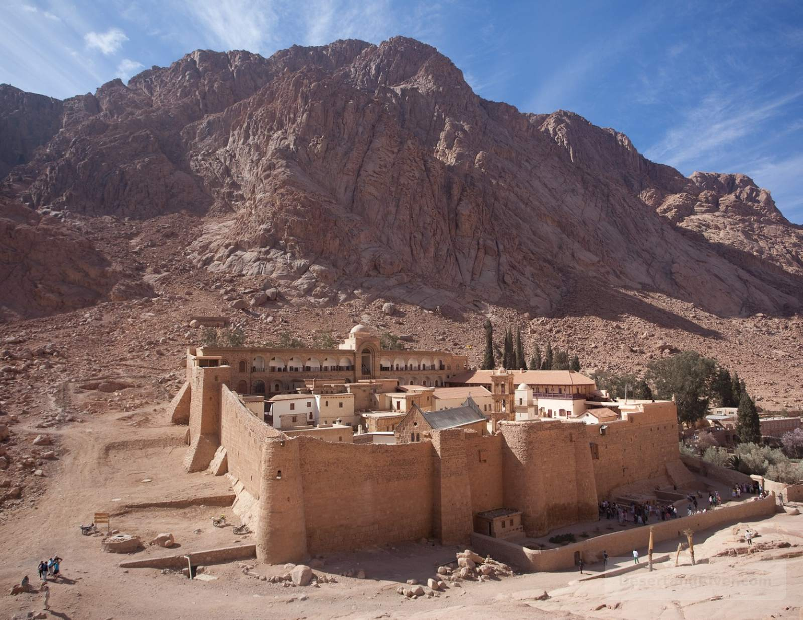
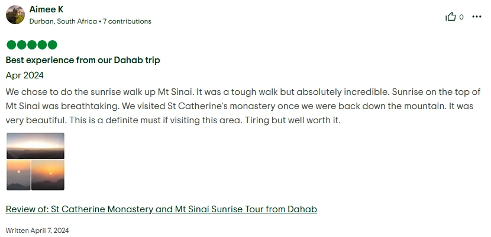

Der klassische Sonnenaufgang auf dem Berg Sinai, nur etwas anders. Die meisten Gruppentouren starten um 22:00 Uhr in Dahab. Wir fahren bewusst um 21:00 Uhr los: Auf dem Gipfel wird es sehr voll, und wer früher startet, steigt vor allen anderen auf und hat den Gipfel eine Weile fast für sich. Nach dem Sonnenaufgang steigen Sie zum Katharinenkloster ab, wenn es öffnet.

Der Ablauf
- 21:00: Abfahrt von The Hub in Dahab
- Ca. 2 Stunden: Fahrt nach St. Katharina
- Der Aufstieg: Ihr einheimischer Bergführer trifft Sie und Sie beginnen den Aufstieg. 5 km, etwa 3 Stunden: zwei Drittel sind Wanderweg, der letzte Teil sind 750 Steinstufen
- Auf dem Gipfel: Eine Weile haben Sie den Gipfel fast für sich, dann kommen die anderen Gruppen und es wird voll. Sie warten auf den Sonnenaufgang
- Nach dem Sonnenaufgang: Abstieg vom Berg
- 09:00: Das Kloster öffnet, ein Klosterführer (ein anderer Führer) zeigt Ihnen alles
- 10:00: Treffen mit Ihrem Auto und Rückfahrt, Ankunft bei The Hub gegen 12:00 Uhr mittags
Im Kloster
Das Katharinenkloster am Fuß des Berges Sinai ist eines der ältesten noch bewohnten Klöster der Welt. Mit Ihrem Klosterführer sehen Sie den brennenden Dornbusch, wo Moses mit Gott sprach, den Mosesbrunnen und die Klosterkirche mit ihren jahrhundertealten Ikonen und ihrer Geschichte.

Zu den Kamelen
Kamele sind nicht inklusive, weder hinauf noch hinunter. Wir empfehlen ausdrücklich zu wandern, außer Sie sind wirklich erschöpft. Wenn Sie ein Kamel nehmen, dann nur hinauf, nie hinunter: Bergab werden Sie zwischen den Beinen des Kamels nach vorne gedrückt, und es ist sehr schwer, sich festzuhalten.
Inklusive
- Transport ab und zurück zu The Hub, Dahab
- Eintritt in den Nationalpark St. Katharina
- Der einheimische Bergführer
- Der Klosterführer
Nicht inklusive: Abendessen, Frühstück und Getränke, das Museumsticket im Kloster, Kamele, Trinkgelder und persönliche Ausgaben.
Mitbringen
- Ihren Reisepass: wichtig, es gibt Kontrollpunkte auf der Strecke
- Gute Wanderschuhe
- Eine Taschenlampe oder Stirnlampe
- Warme Kleidung: Auf dem Gipfel wird es sehr kalt
- Wasser und Snacks (nicht inklusive)
- Sonnenbrille
- Kleidung, die Schultern und Knie bedeckt, für das Kloster
- Etwas Bargeld für das Museum, Getränke oder ein Kamel
Nicht mitbringen
- Eine Drohne (Drohnen sind in Ägypten verboten)
- Shorts oder ärmellose Oberteile für den Klosterbesuch
- Schweres Gepäck: Sie tragen alles selbst den Berg hinauf
Preis
400 € pro Auto, 1 bis 4 Personen
Online buchen & bezahlen
Sichere Kartenzahlung über PayTabs. Zahlen Sie den vollen Betrag oder jetzt 50 % Anzahlung und den Rest in Dahab. Abgerechnet wird in ägyptischen Pfund (1 € = 60 EGP).
Schicken Sie uns nach der Zahlung Ihr Datum und Ihre Namen per WhatsApp, damit wir Ihre Tour bestätigen können. Per WhatsApp senden
Das sagen unsere Gäste



Stornierung
Kostenlose Stornierung bis 3 Tage vor der Reise. Bei späterer Stornierung wird der volle Reisepreis berechnet.